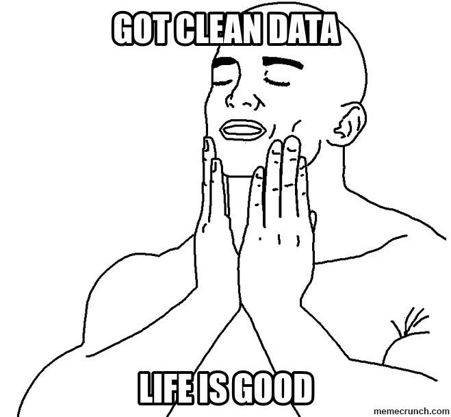
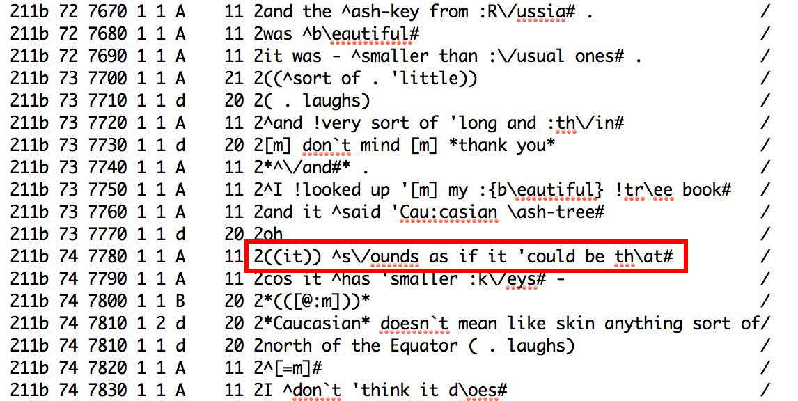
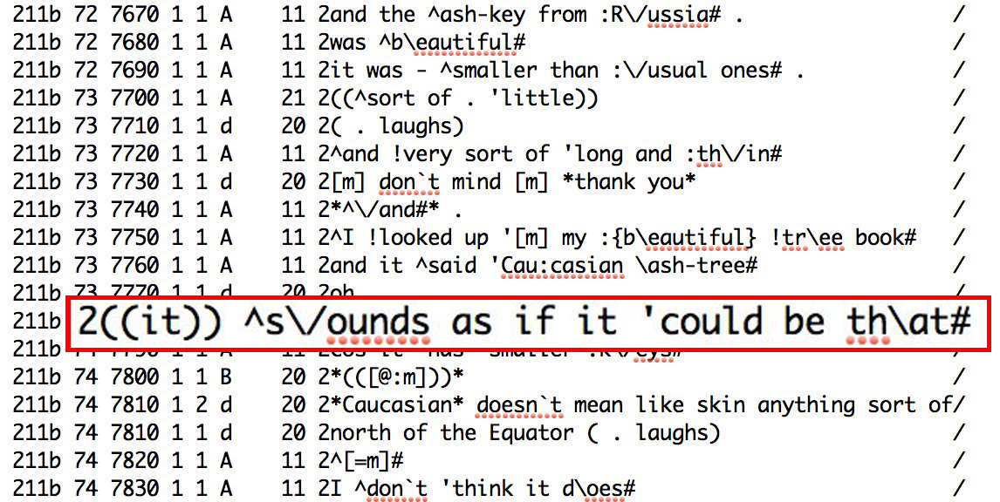
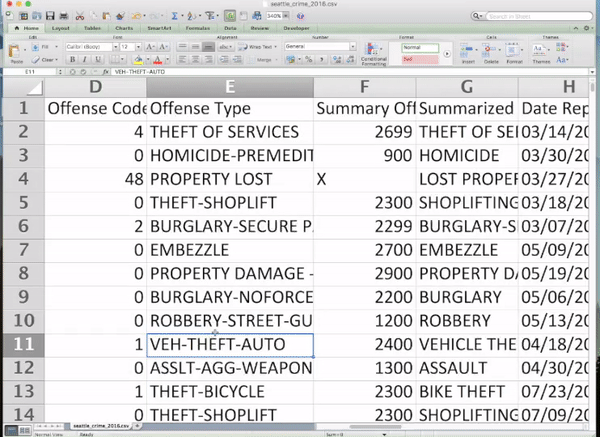
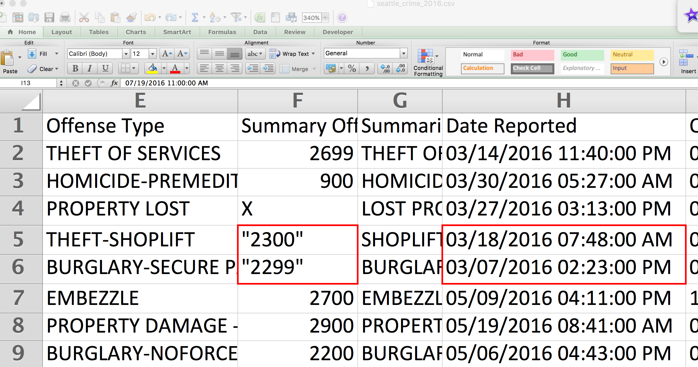
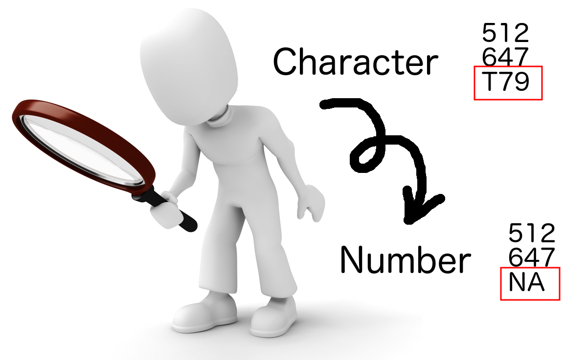
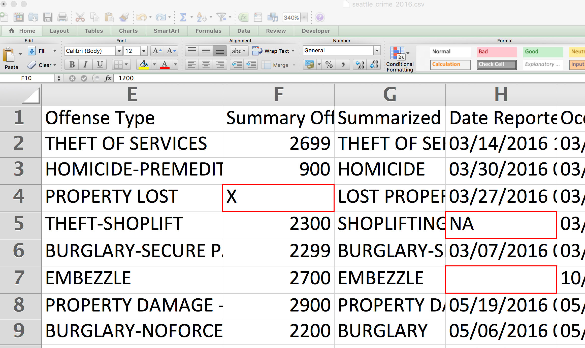
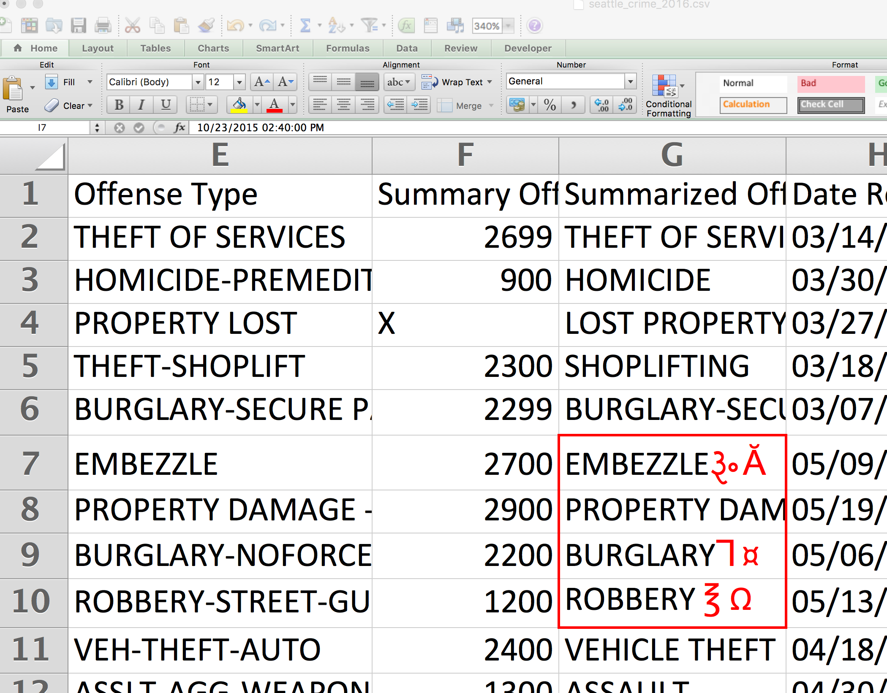

Urban Big Data Analytics
Class 3Data Wrangling
July 20, 2018
Instructor: Andy Hong, PhD
Postdoctoral Research and Teaching Fellow
School of Population and Public Health
University of British Columbia
Assignment 2 check in
- Gapminder offline tool
- If your country is not included, then just pick one country you like
- If the export function doesn't work, just take a screen shot
Data wrangling
What is data wrangling?
- A process of turning raw data into a more appropriate format
- Data cleaning
- Data munging
- Manipulation
- Transformation
- Janitor work
Life of data scientists

Clean data are rare
Data come in a messy form
Example - Twitter data


Principles of data wrangling
Four principles
- Never touch the original data
- Inspect data types
- Check each step
- Examine missing data
- Remove weird data
Never touch the original data
Inspect data types
Check each step
Examine missing data
Remove weird data
Data wrangling in R
Common procedures
- Select specific columns: select()
- Select specific rows: filter()
- Create new columns: mutate()
- Aggregate data by certain groups: group_by()
- Change the unit of analysis: summarise()
Vancouver crime data demo
- Create a group session folder first
- Windows: My Documents\vsp_bigdata\group_session\03-lecture
- Mac: Documents/vsp_bigdata/group_session/03-lecture
Vancouver crime data demo
- Download the CSV file
- Move the CSV file to the following folder: vsp_bigdata/group_session/03-lecture
- Run Exploratory